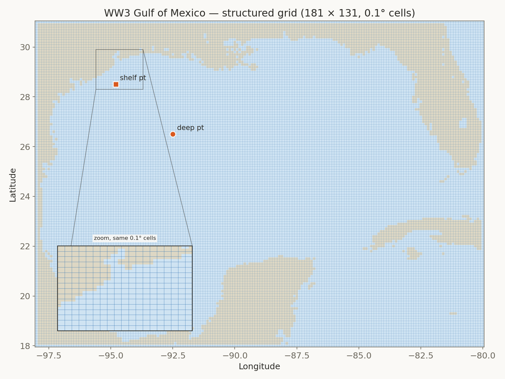
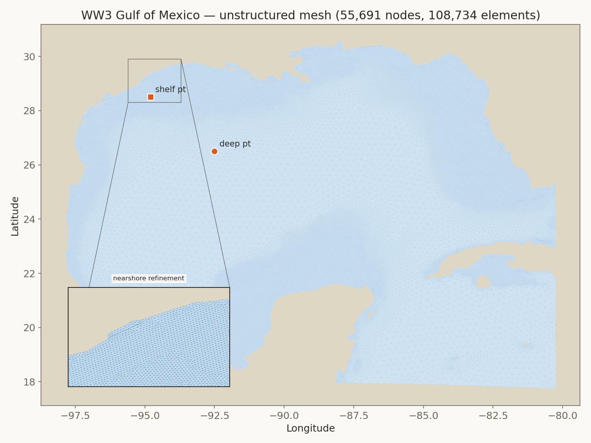
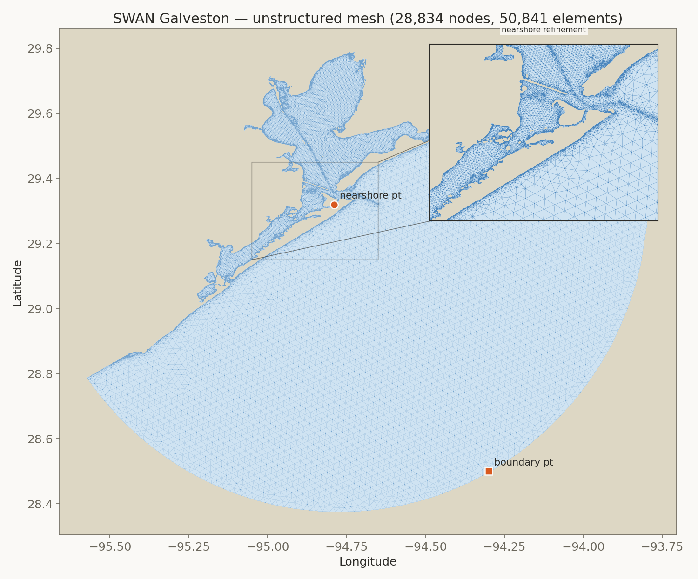

WW3 → SWAN nested wave model · grid intercomparison
Hurricane Ike (2008)
Structured vs. unstructured regional grid sensitivity for a Gulf-of-Mexico–to–Galveston nested wave forecast — Hs, wave period, and mean direction at four locations spanning deep water to the harbor entrance, scored over a 72-hour window bracketing landfall after a 48-hour model spin-up.
Key finding
After correcting a depth sign-convention bug in the unstructured WW3 grid setup (UNST%SF), the structured and unstructured regional grids agree closely at the reference points for Ike: within 2.9% at the deep-water reference point and 2.3% at the Galveston harbor entrance, for peak significant wave height. Nearer the storm core they diverge more: at Mid Gulf buoy 42001 the unstructured mesh peaks 10% higher (13.2 vs 12.0 m, against 9.25 m observed). Ike crossed the open Gulf on a broadly northwest track, sweeping hurricane-force winds across a wide swath of deep water before striking Galveston nearly head-on.
structured 0.1° grid → boundary spectra
149 nest points → SWAN · Galveston
28,834-node mesh
unstructured 55,691-node mesh → boundary spectra
149 nest points → SWAN · Galveston
28,834-node mesh (same)
Grids & meshes
Both grid types, for both models. WW3's two regional Gulf of Mexico grids (top row) are the actual grids used in this study's WW3 stage. SWAN's unstructured Galveston nest (bottom right) is the actual mesh used in this study's SWAN stage — SWAN's structured Gulf grid (bottom left) is shown for completeness (pywaves supports it) but was not part of the nested pipeline in this study, which always feeds SWAN the unstructured Galveston mesh regardless of WW3's grid type. Markers show the reference points sampled below.




Wind forcing
Both grids share identical forcing: a GAHM-style asymmetric parametric vortex fit to the HURDAT2 best track, blended with ERA5 ambient wind and pressure. Ike made landfall directly at Galveston, TX.
ALLOWANCE) tuned against a weak, decaying storm (Harvey's stalled Aug-29 phase) permitted the profile to peak 25% above the storm's own reported vmax when it bound -- which it rarely did for Harvey, but did routinely for Ike's deeper, more intense pressure profile. Reduced from 1.25 to 1.05 (verified: peak/vmax ratio now 0.95-1.04 for both storms, vs. up to 1.24 for Ike previously) and both grids fully re-run. Bias improved most where the vortex core dominates (e.g. buoy 42001, bias 3.3→2.9 m/s); a residual positive bias remains at all three buoys, consistent with HURDAT2's 1-minute-sustained wind convention running higher than NDBC's 8-minute-average measurement -- a separate, unaddressed effect.Physics fixes: bottom friction and nest time step
Found while investigating why this WW3→SWAN chain under-predicted Galveston relative to a coupled SCHISM-WWM hindcast of the same storm, even though WW3 alone matches or beats SCHISM-WWM at every other Gulf buoy. Both fixes are now the pipeline default for Ike; neither has been validated for Harvey.
GAMMA
= -0.067, also what the SCHISM-WWM hindcast uses) damps shelf-transiting swell more than SWAN's own
default (-0.038). Switching WW3 to SWAN's value improved Galveston (structured-grid RMSE
1.33→0.97 m, bias -0.92→-0.54 m, measured directly on WW3's own grid) and was neutral-to-better at
every one of the other 8 Gulf NDBC stations checked (pooled RMSE 0.98→0.93 m) — not a Galveston-only
trade-off.Run design: 48-hour spin-up
Both WW3 and SWAN start from zero wave energy at 09/09 12:00 UTC, 48 hours before the 72-hour scoring window (09/11 12:00–09/14 12:00), and every statistic and chart below is scored on that window only.
Wave parameters by location
Hs, period, and mean wave direction (MWD, 0–360° raw — a jump across the wrap point is not a real direction change) at each of four locations, from deep Gulf water through the SWAN nest boundary to the harbor entrance. Period uses Tp (peak period, from WW3's peak frequency output) for the two Gulf points and T01 (mean period) for the two Galveston points, the field SWAN's own output carried for this run. Hover any chart for hourly values.
Deep water
WW3 · Gulf of Mexico92.5°W, 26.5°N · regional WW3 grid, open water (~2,900 m)
Hs · significant wave height
Tp · wave period
MWD · mean direction
Continental shelf
WW3 · Gulf of Mexico94.5°W, 28.5°N · regional WW3 grid, shelf water (~30-35 m)
Hs · significant wave height
Tp · wave period
MWD · mean direction
Open boundary
SWAN · Galveston94.28°W, 28.51°N · SWAN mesh, nest boundary node (~35 m)
Hs · significant wave height
T01 · wave period
MWD · mean direction
Harbor entrance
SWAN · Galveston94.79°W, 29.285°N · SWAN mesh, nearshore node (~1.8 m)
Hs · significant wave height
T01 · wave period
MWD · mean direction
Peak value summary
| Location | Hs struct. (m) | Hs unstruct. (m) | Difference | Period struct. (s) | Period unstruct. (s) |
|---|---|---|---|---|---|
| Deep water | 11.87 | 12.21 | +2.9% | 16.4 | 16.9 |
| Continental shelf | 8.11 | 8.25 | +1.8% | 17.2 | 17.9 |
| Open boundary | 4.12 | 4.31 | +4.6% | 9.4 | 10.6 |
| Harbor entrance | 0.95 | 0.98 | +2.3% | 8.8 | 10.6 |
UNST%SF fix, the same comparison showed the unstructured grid underestimating the
structured grid by a factor of 5–6×, caused by ~98% of the unstructured mesh's nodes being
silently marked dry.Observed vs. modeled — NDBC buoys
Real wave-height observations from three NDBC buoys spanning the same range as the synthetic reference points above, compared against both grid types at their nearest node. Bias, RMSE, and correlation computed on hourly-matched Hs over the 72-hour scoring window.
Mid Gulf
NDBC 42001 · -89.64°W 25.92°NCompared against the regional WW3 Gulf grid, hourly, nearest valid observation within 30 min.
Hs · wave height
Wind speed
Tp · peak period
MWD · direction
circular; bias/RMSE only
Freeport, TX
NDBC 42019 · -95.34°W 27.91°NCompared against the regional WW3 Gulf grid, hourly, nearest valid observation within 30 min.
Hs · wave height
Wind speed
Tp · peak period
MWD · direction
circular; bias/RMSE only
Galveston, TX
NDBC 42035 · -94.41°W 29.23°NCompared against the SWAN Galveston mesh, hourly, nearest valid observation within 30 min.
Hs · wave height
Wind speed
read from the actual GAHM+ERA5 forcing field, not SWAN's own BLOCK wind output -- that diagnostic was found not to reflect the input forcing at all (verified by injecting an extreme value into the wind file and confirming it never appeared in the output)
RTP · peak period
MWD · direction
circular; bias/RMSE only
Accuracy and runtime, summarized
Raw comparison stats, no verdict — structured and unstructured each win some buoy/parameter comparisons and lose others; see the buoy cards above for the full breakdown per location and parameter.